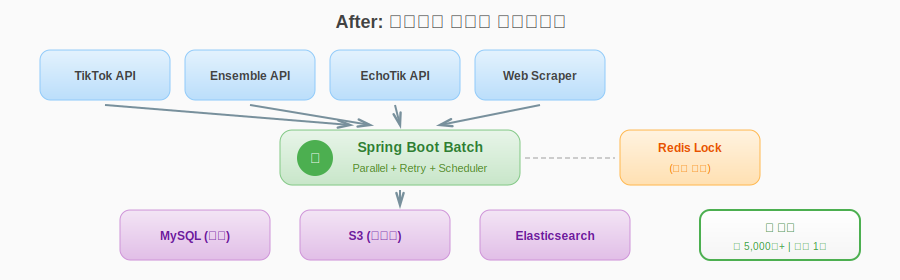
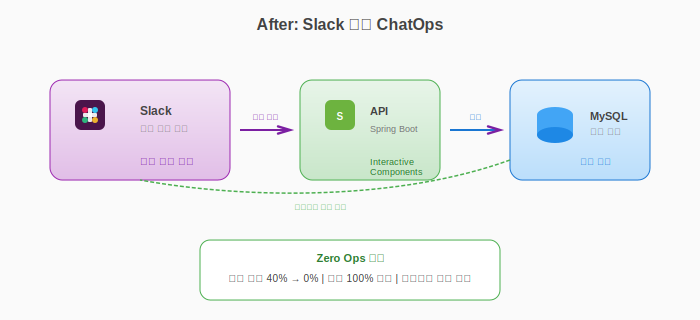
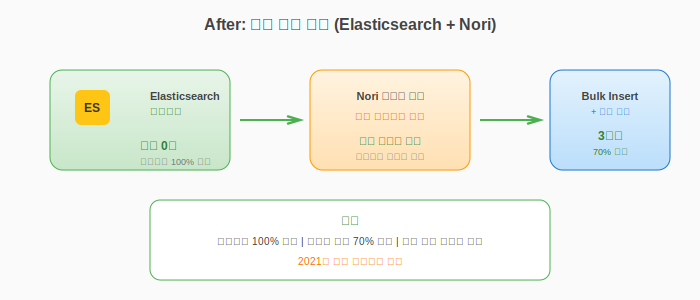

1. 인플루언서 데이터 플랫폼 (200만 데이터 규모)
프로젝트 리드 (1인 개발) | 2022.02 - 현재 | (주)구하다
Challenge
| 문제 | 제약 조건 | 영향 |
|---|
| 수작업 데이터 수집 | 마케팅팀 인적 한계 | 일 수십 명, 대형 캠페인 불가 |
| RDB 검색 타임아웃 | 200만 건 복합 조건 | 응답 10초+, 사용성 저하 |
| CDN 링크 만료 | 외부 이미지 의존 | 프로필 이미지 유실 |
Architecture
AFTER: 자동화된 데이터 파이프라인

Decision Log
Elasticsearch 도입
Context: 200만 건 + 복합 필터 → 응답 10초+ 지연
Decision: 구하다 커머스에서 이미 ES 운영 중, 동일 스택으로 운영 복잡도 최소화
Redis Distributed Lock
Context: 멀티 인스턴스 환경, 외부 API Rate Limit
Solution: TTL 60초 분산락으로 데드락 방지 + 멱등성 확보
Result
| 지표 | Before | After | 개선율 |
|---|
| 검색 응답 | 10초+ | 1초 이내 | 90%↓ |
| 데이터 풀 | 10만 명 | 200만 명 | 20배↑ |
| 일 수집량 | 수십 명 | 5,000명+ | 100배↑ |
Lesson Learned: 초기 설계 시 데이터 규모 예측 부족 → 이후 프로젝트에서 Scale-out 전제 설계 원칙 수립
2. ChatOps 기반 운영 프로세스 자동화
설계/구현 | 2024.01 - 2024.03 | (주)구하다
Challenge
| 문제 | 영향 |
|---|
| 채널 파편화 (이메일/메신저/구두 등 5개) | 정보 누락, 히스토리 추적 불가 |
| 어드민 접속 필수 | 컨텍스트 스위칭 병목 |
| 운영 업무 40% 수동 처리 | 고부가가치 업무 집중 불가 |
Architecture
AFTER: Slack 통합 ChatOps

Decision Log
Slack 플랫폼 선택
Options: A. Admin Web 강화 B. Slack ChatOps C. 전용 앱 개발
Decision: B 선택 - 사용자 채택률 극대화가 핵심
Trade-off: Slack 의존성 → 기존 어드민 Fallback 유지
Result
| 지표 | Before | After | 개선율 |
|---|
| 수동 업무 비율 | 40% | 0% | Zero Ops |
| 요청 채널 | 5개 분산 | Slack 단일 | 100% 통합 |
| 히스토리 추적 | 불가능 | 스레드 기록 | 100% 가능 |
Lesson Learned: 도구 도입 전 현업 인터뷰로 실제 Pain Point 발굴 필수 → 기술이 아닌 문제 중심 접근
3. 자체 검색 엔진 구축 및 대용량 처리 최적화
아키텍처 설계 주도 | 2018.06 - 2021.08 | (주)한국문헌정보기술
Challenge
| 문제 | 영향 |
|---|
| 상용 검색엔진 라이선스 | 연간 수천만원 → 프로젝트 수익성 저하 |
| 대량 이미지 단건 Insert | 10시간+ 소요 |
| 한글 형태소 분석 미지원 | 검색 정확도 저조 |
Architecture
AFTER: 자체 검색 엔진 (Elasticsearch + Nori)

Decision Log
Elasticsearch + Nori 조합
Why: 오픈소스로 라이선스 비용 제거, Nori는 한글 형태소 분석 네이티브 지원
Trade-off: 운영 복잡도 증가 → 자체 운영 역량 확보 필요
Bulk Insert + 병렬 처리
Context: 단건 Insert → 네트워크 오버헤드 과다
Solution: 최대 해상도(2000px) 생성 후 나머지(1000px~300px) 병렬 처리
Result
| 지표 | Before | After | 개선율 |
|---|
| 라이선스 비용 | 수천만원/년 | 0원 | 100%↓ |
| 데이터 등록 | 10시간+ | 3시간 | 70%↓ |
| 한글 검색 | 형태소 분석 없음 | Nori 적용 | 정확도↑ |
Impact: 프로젝트 수익성 향상, 2021년 사내 우수사원 선정
10. 레거시 시스템 TDD 도입
백엔드 개발 | 2021.09 - 2022.01 | (주)인터파크
Challenge
| 문제 | 영향 |
|---|
| 테스트 코드 전무 | 배포 리스크 높음 |
| 레거시 코드 결합도 높음 | 수정 시 사이드 이펙트 예측 불가 |
Decision Log
점진적 TDD 도입
Context: 레거시 시스템에 테스트 코드 전무, 전체 리팩토링은 리스크 과다
Solution: 신규 기능 개발부터 TDD 방식 적용
우선순위: 핵심 비즈니스 로직(판매자 정산/주문 조회) 단위 테스트 우선 작성
구조 개선: 테스트 가능한 구조로 Service Layer 분리 리팩토링
Trade-off: 전체 커버리지 대신 핵심 로직 집중
Result
| 지표 | 성과 |
|---|
| 테스트 문화 | 정착 |
| 배포 리스크 | 감소 |
| 핵심 로직 커버리지 | 확보 |
윤원희 | Technical Portfolio v2.0
최종 수정: 2026-01-04 | 공개 범위: 채용 목적 한정
본 포트폴리오는 회사 보안 정책에 따라 아키텍처와 의사결정 중심으로 작성되었습니다.